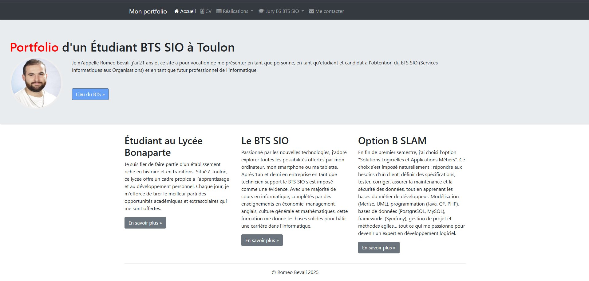
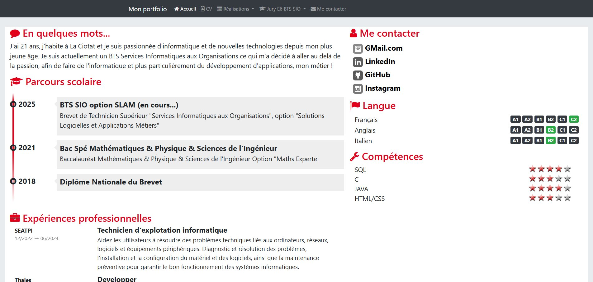
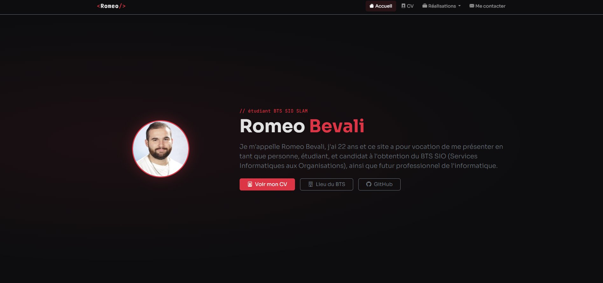
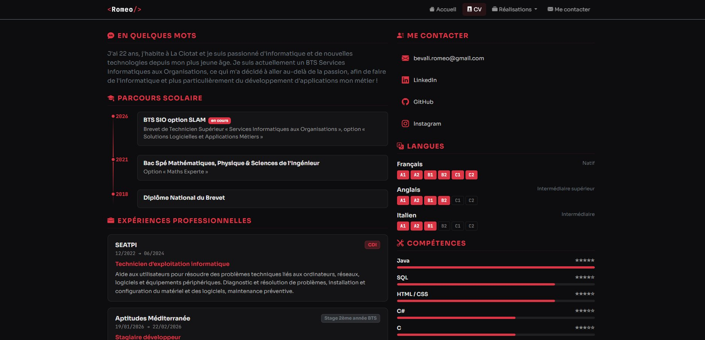

HTML · CSS · Bootstrap · Git · GitHub Pages
Création d'un site portfolio personnel dans le cadre du module Travailler en mode projet (Bloc 1.4 BTS SIO), avec gestion de versions Git et hébergement via GitHub Pages.
Ce projet s'inscrit dans le TP « Travailler en mode projet » du BTS SIO 1ère année (José GIL). L'objectif était double : apprendre à utiliser Git et GitHub (branches, commits, pull requests, Kanban) tout en construisant un portfolio personnel hébergé sur GitHub Pages. Les consignes imposaient NetBeans comme IDE, Bootstrap 4 comme framework CSS et Font Awesome 4 pour les icônes.
J'ai réalisé l'intégralité du portfolio en suivant les étapes du TP : création du dépôt GitHub, mise en place du Kanban, page d'accueil avec jumbotron et footer en trois colonnes, page CV avec timeline de parcours scolaire, étoiles de compétences, badges de langues et expériences professionnelles, puis l'ensemble des pages de tous mes projets BTS (Nolark, Chocolate'in, GSB, CGB…) présentées avec le composant Bootstrap Album. Chaque fonctionnalité était versionnée dans une branche dédiée puis fusionnée via pull request.

Page d'accueil — Bootstrap 4, jumbotron, footer 3 colonnes

Page CV — timeline, étoiles, badges langues, expériences
Une fois la version imposée par le TP terminée, je n'étais pas satisfait du rendu : Bootstrap 4 vieillissant, Font Awesome 4 obsolète, CSS trop minimaliste. J'ai choisi de faire une refonte purement esthétique en utilisant Claude (Anthropic) comme assistant — non pas pour générer du code que je ne comprends pas, mais pour itérer rapidement sur le design en restant sur des technologies que je maîtrise déjà : HTML, CSS, Bootstrap 5 et JavaScript. Claude m'a servi de bras droit pour la mise en forme, le choix des couleurs, la typographie et la structure des pages, pendant que je gardais la main sur le contenu, la logique et les décisions techniques.

Page d'accueil — refonte Bootstrap 5, design sombre

Page CV — barres de compétences, timeline modernisée